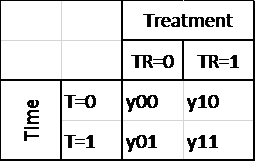
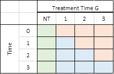
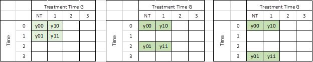
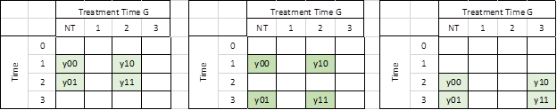
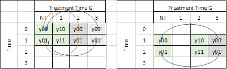
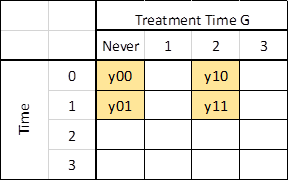
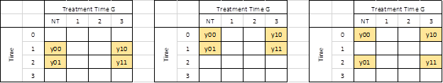
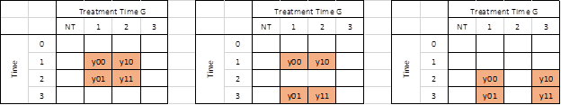

So, as you may have read on my posts on Twitter, I've been working closely with developing a Stata command for the DID estimator proposed by Callaway and Sant'Anna (2020).
One of the payoffs of doing this, while trying to read or attend presentations on DID estimators, is that after so much coding and reading, you do end up understanding a few of the concepts better, in particular why some strategies (like the infamous Two-way-Fixed-effect TWFE) may not produce correct estimates.
I'll try to keep things simple, to improve the intuition. Let's get started.
So let's start with the building block that most of the papers I have read in regards on DID models use. This is the 2x2 canonical design.
In the basic 2x2 DiD design you observe two groups of observations across two periods in time.
In the first period, neither of these groups receive a treatment. So for all intents or purposes, you can assume that they are identical in every single say.
In the second period, however, one of the groups receive a treatment (a training program, medicine, or other type of treatment), whereas the other is left "untreated".
Once the experiment is finalized, you can design a simple 2x2 matrix that could help analyze the data, and quantify the impact of the treatment:

To simplify notation, I’ll assume that all the -yXY- represent the average outcome for the group -X- (treated =1 or untreated=0) at time Y (Pre=0 and post =1).
how do we estimate the treatment effects?
We know that the treatment occurred in T=1. One may be willing to estimate the TE by simply obtaining the difference in the outcome between treated and not-treated groups “y11-y01” (First D).
This, however, would be incorrect, as this difference accounts for the treatment effect and a “self-selection bias”. In other words, there could be differences in their average outcomes because both groups were different to begin with.
The alternative could be to just look at the treated unit, and evaluate how much its outcome has increased after the treatment “y11-y10”. This will also be incorrect, because the observed change could be the result of some natural growth or trend that the unit experience independent from the treatment. (second D)
The best approach, however, is to combine both strategies. In other words, obtain the Differences of Differences, to identify the treatment effect.
Intuitively, this could be thought in two ways:
TT1= (y11-y01) Post-period Treated vs untreated
-(y10-y00) pre -period Treated vs untreated
In essence this captures the TE if the selection bias of the second period is the same as the selection bias observed in the first period.
TT2= (y11-y10) Treated Post vs pre
-(y01-y00) Untreated Post vs pre
Both strategies get you the same result, but with slightly different assumptions.
So this is the vanilla 2x2, piece-of-cake strategy. If the basic assumptions hold, you cannot go wrong with this. The problem, surprisingly or not, is what happens when you have MORE data.
As I said before, which echoes what people smarter than me have said before, is that the simple case is easy to estimate and do right. We can even use simple linear regression analysis to analyze the data, and estimate the TE:
y_it = a0 + a1*tr + a2*t + TE * (tr*t) +e_it
The problem comes from a design that has more time periods and groups (that are treated at different times). I will loosely base my explanation on Callaway and Sant’Anna (2020).
Assume that you have 4 periods: T=0, 1, 2, 3; and 4 “groups” G = Never treated (NT), 1,2,3
The idea of the “T” as a time variable is similar to the 2x2 design. What changes is the idea of the treatment identifier.
Before, I was using the name “TR”, to identify treated (1) or untreated (0) units. However, when adding more time periods into the analysis, we add the possibility that units can be “treated” at different points in time, or Never treated at all.
Callaway and Sant’Anna (2020) use the letter G to identify this variable, but use “infinity” to refer to observations that are never treated (at least in the data on hand). I will not assign a number, and call it never treated (NT for short).
Notice that I ignore the case that a group is “always” treated. Because we cannot really identify anything about them (we cannot see their outcomes before treatment)
This TxG design would look like the following (in matrix form):

All blue cells are units that have been effectively treated, whereas orange cells are observations that could be used as potential controls, because they have not been treated yet. The cells in green correspond to the never treated units. These are in essence the perfect controls, because they have never been treated. Thus, unless spill over exists (which lets assume they don’t), you can always use NT units to make GOOD 2x2 DiD.
Here is where the connection to the 2x2 design starts, which also may explain why the TWFE model, may sometimes get it wrong.
From a technical point of view (read for example Goodman-Bacon 2019), the traditional TWFE model obtains a parameter for TE that is the average of all possible 2x2 designs that could be constructed from the above matrix. However, not all of them are good ones!.
Some of the 2x2 combinations will provide interesting and meaningful results:
Lets say, we are interested in the treatment effect only for the group that was first treated in period 1 (G=1).
The first thing to consider is which group could be used as a “control”, to appropriately identify the TE. The first and easy choice is to compare the G1 units with those observations that were never treated (NT). (the “perfect” control group).
Using the NT as control units, we can construct at least 3 2x2 DiD setups to identify the TE 1, 2 and 3 periods after the treatment took place:

A very similar exercise could be done if one is interested in analyzing the TE for other groups (say G2 and G3):

If a Never treated group were not available, it is also possible, and valid given limited information, to use units from other “treated” groups as controls, as long as they have not yet been treated:

For the case of G1, if we want to estimate the TE 1 period after treatment, we could use observations from G2 and G3, as part of the controls. This is possible because those observations are not affected by the treatment yet at T1 (assuming no anticipation).
For G2, we could also do the same, using data from G3. For G3, we couldn’t use this strategy, because other than NT units, there will not be any other observation that is untreated.
A general rule, if you look at the different matrices, is that a “good” 2x2 DiD will be one where only 1 of the cells falls in the effectively treated group (blue cells), whereas all other 3 cells are formed by “good – untreated controls” (Red and green)
There are other designs that could also be of interest, especially if we would be interest in testing the parallel trends assumption. For observations treated in the second period, for example, we could use the following design to check if there have been any important changes in their outcome (anticipation treatment) a period before they were treated.

This is a good DID design because all units are effectively untreated. Thus, if parallel assumption holds, you should see a TE that is effectively 0.
For observations in G3, one has even more options. One can check if there were period to period changes in the outcome before the treatment took place, or even looking into at long-run changes (as the third matrix suggest).

In general, if we refer to the first matrix, if all units in the 2x2 DiD are part of the never treated or not-yet-treated units, those comparisons can be used to test parallel lines assumptions. Since neither unit was treated, one should expect TE that are equal to zero.
Just as there are good, there are also Bad. As described in Goodman-Bacon (2019), one of the pitfalls of the TWFE is that it may also try to identify TE by comparing units that are already treated, but at different times.

Consider the first panel. It compares data for G2 to those in G1. At T1, G2 is untreated, whereas G1 is treated both at T1 and T2. If the treatment effect were homogenous (a location shift), this may work. However, if the treatment affected both G1 and G2 differently (violating the parallel line assumption), then this 2x2 design will not identify Treatment effects (it may identify TE differences across both groups). The same thing would happen if we use a longer difference (second matrix) or if we look at G3.
As a rule, if your “control” group includes unit that were treated as any point in the present or past, It is a bad control, and the 2x2 DiD will not identify the TE.
DRDID is a doubly robust methodology that deals with how to get the best estimation from a 2x2 design. Specifically, how to get the best Average Treatment Effect on the treated. So you can use it for any of the square 2x2 combinations I show above (or others you can come up).
CSDID on the other hand uses DRDID to get this ATT’s but only for “good” designs. Either those that identify ATT’s correctly, or those that can be used for testing parallel trends. More importantly, it avoids estimating bad DiD designs.
In addition to that, because there are so many numbers to follow, It summarizes the results by averaging ATT’s based on some criteria, like averaging effects by G, by T, or by length of treatment (events Study equivalent).
All right, thanks for reading. Hope you find this useful!